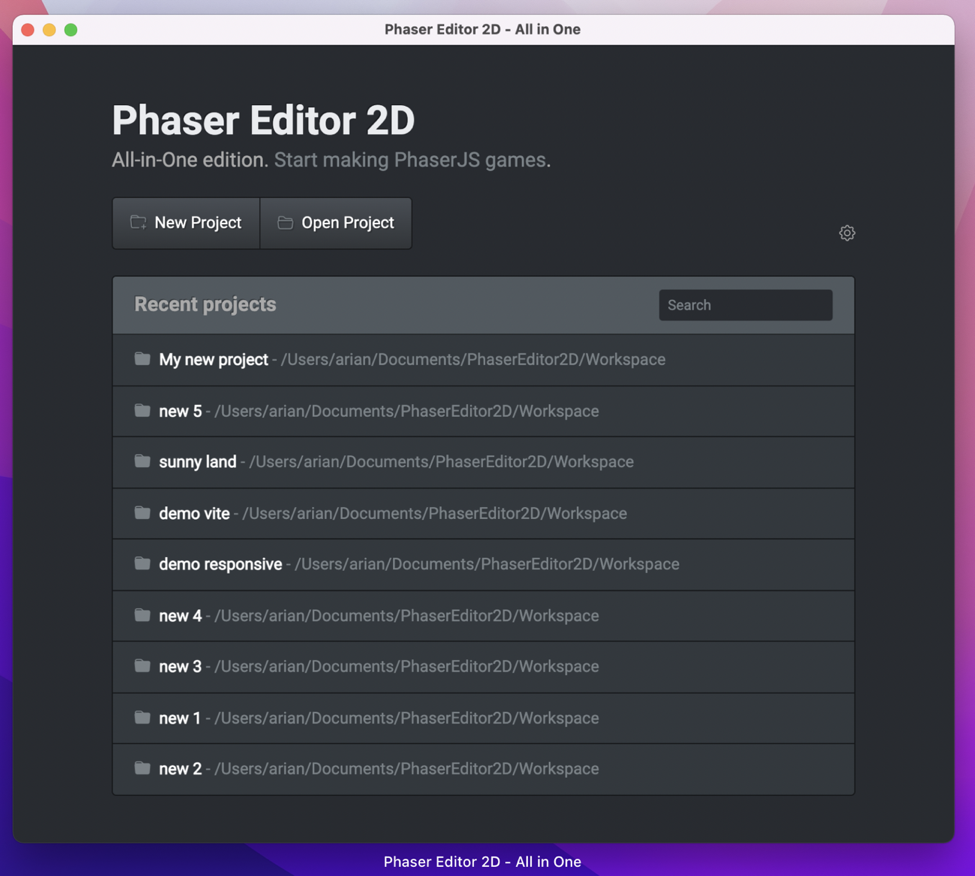

Phaser Editor 2D All-in-One
The Phaser Editor 2D All-in-One distribution wraps the Phaser Editor 2D Core distribution in an ElectronJS app, adding more features and integration with the Operating System.
This is the distribution we recommend to you if you are not familiar with the web development tooling (TypeScript, NPM, WebpackJS).
This distribution provides:
A portable desktop application.
A start page for opening & creating projects.
A couple of project templates with different setups. Including some example games.
It doesn’t require a modern browser installed in your OS.
It doesn’t require an active Internet connection.
Start page, project list:
Start page, project templates: